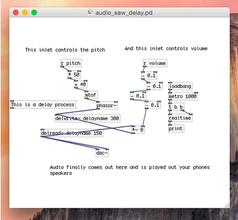
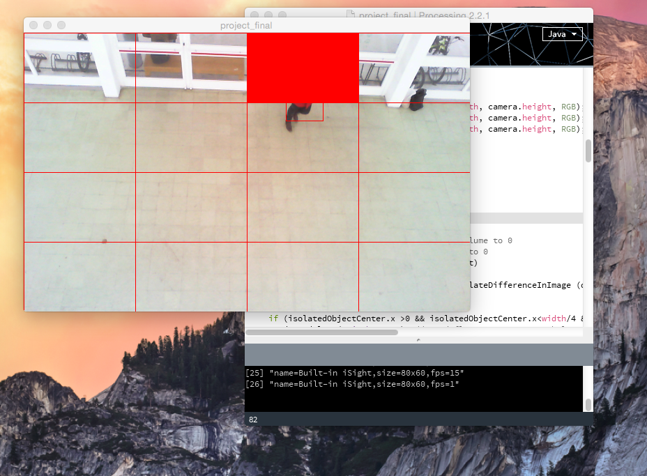
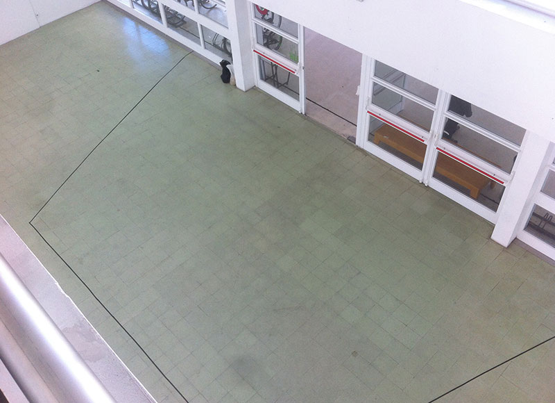

This was an audio visual interactive installation I did while living and studying in Portugal. It is tracking the movement of the people and playing sounds based on that. Installation was placed over the main enterance of the design school of Caldas da Rainha. This was filmed on Monday morning, which explains the lack of student traffic but it still was enough for me to gather results. In the future I plan to use this program to collect some useful information about the amount of traffic / direction / interactivity.
There was no visual hints about the installation (except the black tape I forgot to remove), so users will have to explore how the experiment is working and how exactly are they interacting with it.
The purpose of this was to bring something unexpected in everyday life of students and see how they would react.
For this setup I used simple external webcam and 3:1 speakers placed on the spot. Choice of good installation space with a constant human traffic is really important.
Calibrating camera.
